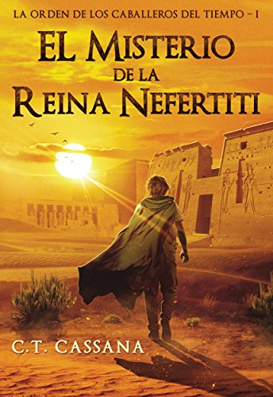
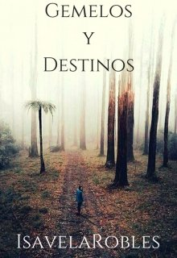

Accion

El misterio de la Reina Nefertiti
La Historia no es sino una sucesión de acontecimientos unidos por el delgado y largo hilo del tiempo. “El misterio de la Reina Nefertiti”, es una espectacular novela de aventuras donde hechos históricos aparentemente inconexos tejen una trama vertiginosa y emocionante que te dejará sin aliento. Su ritmo trepidante te atrapará y sus personajes te seducirán hasta el punto de que no desearás que acabe.
Mas de Accion
Suspenso

Gemelos y destinos
¿Alguna vez han pensado en vida en otro planeta? Y si la hay ¿cómo serán?
El instituto Liceo del Norte es un colegio élite con gran reconocimiento a nivel mundial, muchos estudiantes llegan todos los años para hacer una evaluación un tanto imposible de ganar. El estudiar allí asegura un gran futuro para esa persona. Aunque... al cerrarse el portón y comenzar las clases los rumores emanan, los estudiantes lo saben, en aquel lugar sucede algo, al parecer no todos son humanos.
Adele lo sabe, ella ha visto a los extraterrestres, pero son tan parecidos a nosotros que es imposible de reconocerlos, aunque... en el instituto rumorean que ella no es una humana, es uno de ellos.
Mas de Suspensos
Comedia
Goy Friendly
Pertenezco a una generación en la que los escritores eran tipos talentosos. Pero la aparición de los libros de autoayuda o las autobiografías de personas que sobrevivieron a cortes de luz me han convencido de que puedo, al menos, intentarlo. Es terrible reconocer que la mediocridad ha sido mi motivación. Pero peor es pedir manzana asada de postre o kinotos al whisky en la heladería.
Mas de Comedias